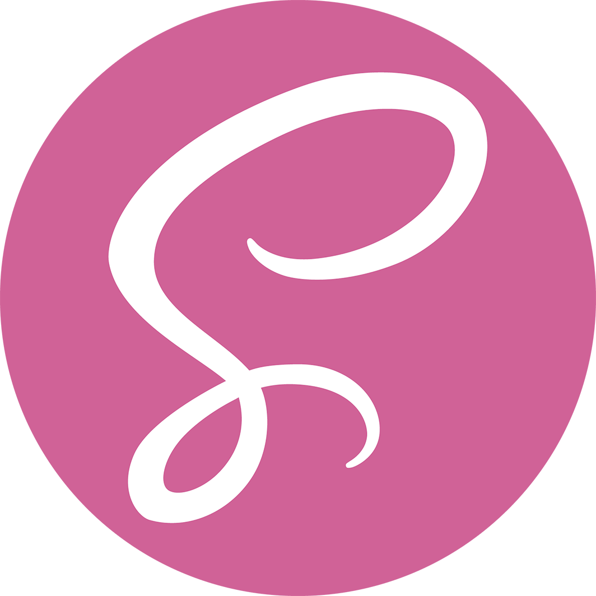
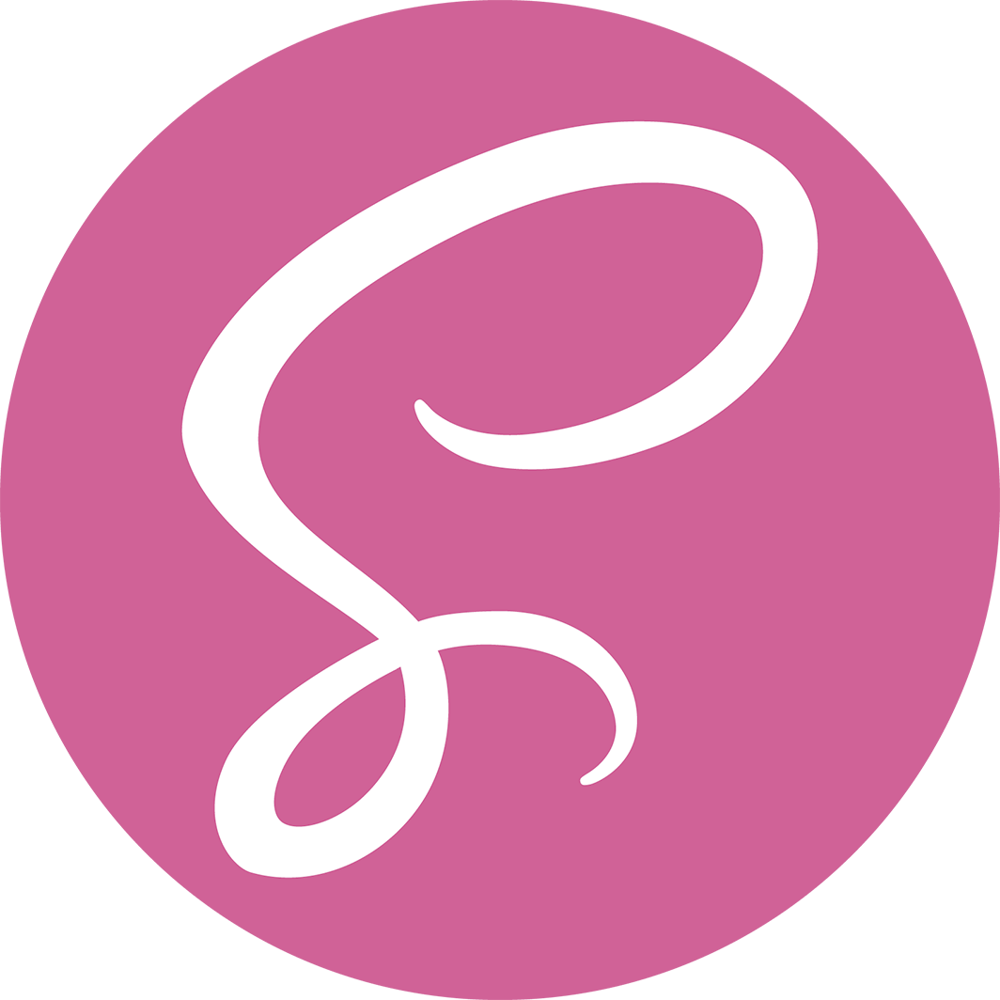

Ecmascript & Typescript
Initialt utvecklades skriptspråket JavaScript (JS) med syftet att hantera program på webbsidor i webbläsaren Netscape Navigator. Snart efter lanseringen 1995 tillkännagavs att den ideella organisationen Ecma International skulle påbörja arbete med att skapa en standardiserad specifikation för JS. Syftet med detta var att definiera och därmed beskriva hur JS ska användas och fungera så att olika programvaror som stödjer JS följer samma standard. Resultatet blev Ecmascript (ES) som lanserades i sin första version - ES1 i juni 1997.Sedan lanseringen har flertalet justeringar/uppdateringar och versioner lanserats och när denna webbplats skapades var ES12 av ECMA-262 den senaste versionen.
TypeScript är ett programmeringsspråk baserad på öppen källkod som är utvecklat av Microsoft, med start 2012. Det är ett ”superset” till JavaScript, med extra funktioner som exempel vis statisk typning. Typescript är utvecklat för att vara anpassat till utveckling av större komplexa webbapplikationer. Transpileras innan körning till JavaScript. Fullt stöd ibland annat Visual Studio IDE och Visual Studio Code. Används i många större ramverk, som exempelvis Angular
 
